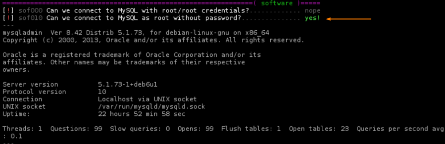
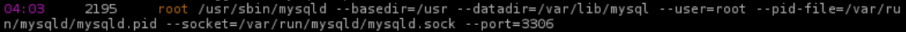
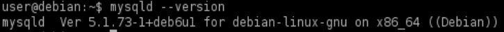

mysqld
Prerequisite
• mysql as root without password
0. Check misconfigurations with lse.sh
target@debian:~$ ./lse.sh -l -i


1. Verify manually that the service mysqld is running as root
target@debian:~$ ps aux | grep "^root.*mysqld" ##find specific program if is running as root

2. Check(enumerate) version number of the program
target@debian:~$ mysqld --version
We can find points 3,4,5 in the subparagraphs
◇ Precompiled Shared Library
◇ raptor_udf.c